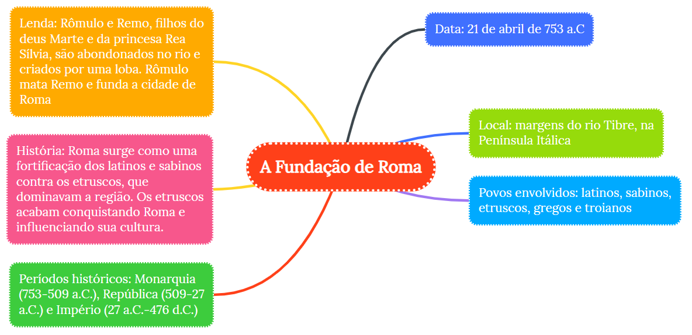
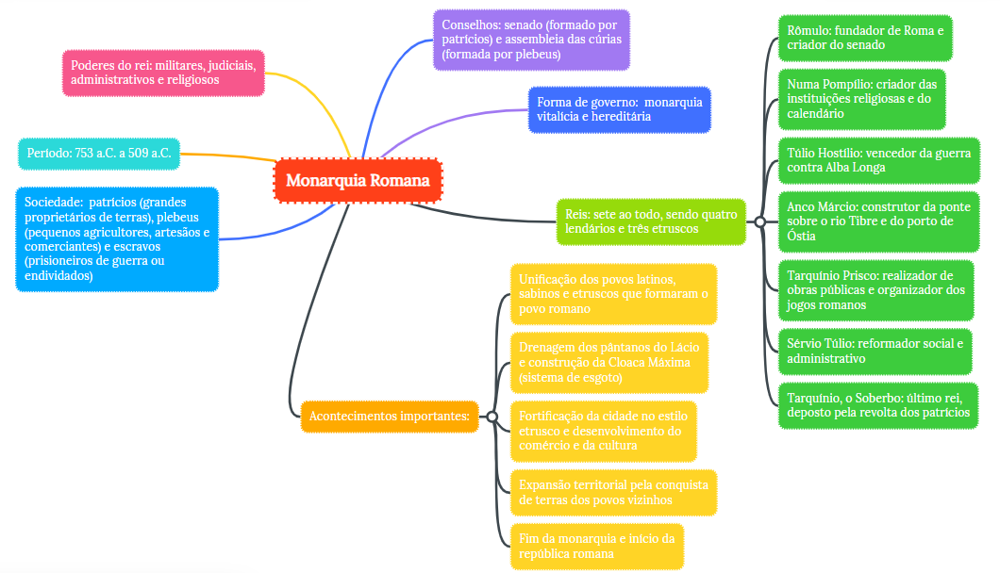
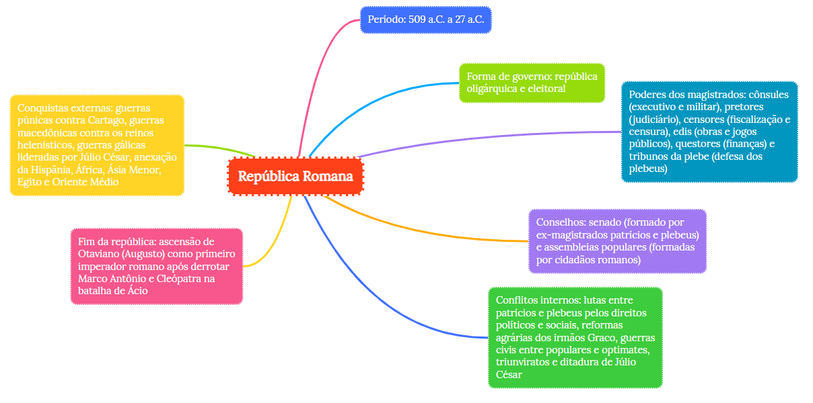
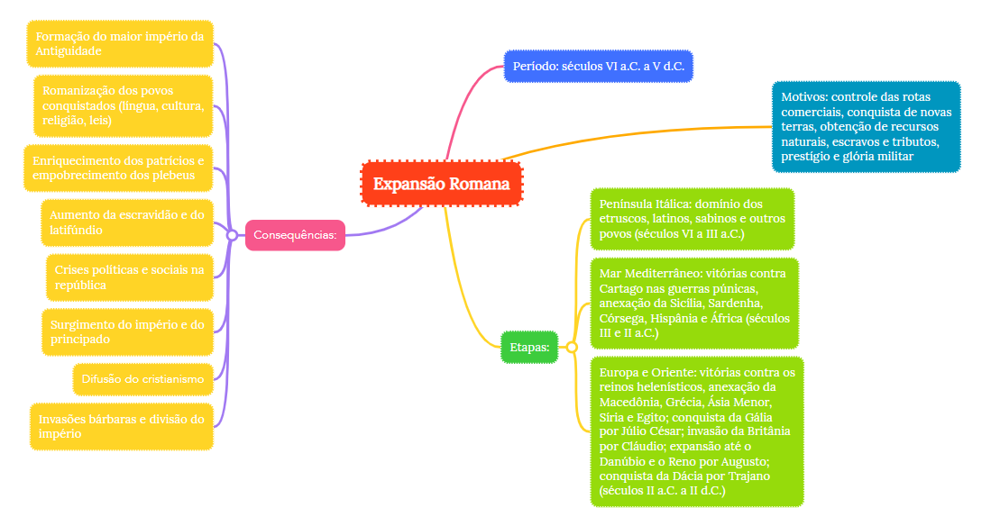
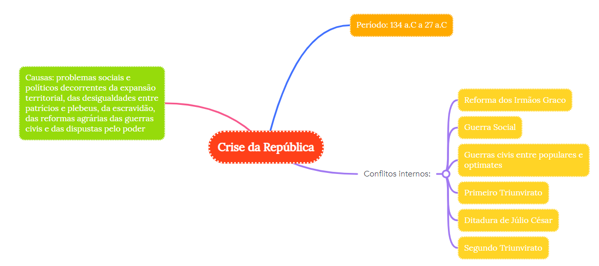
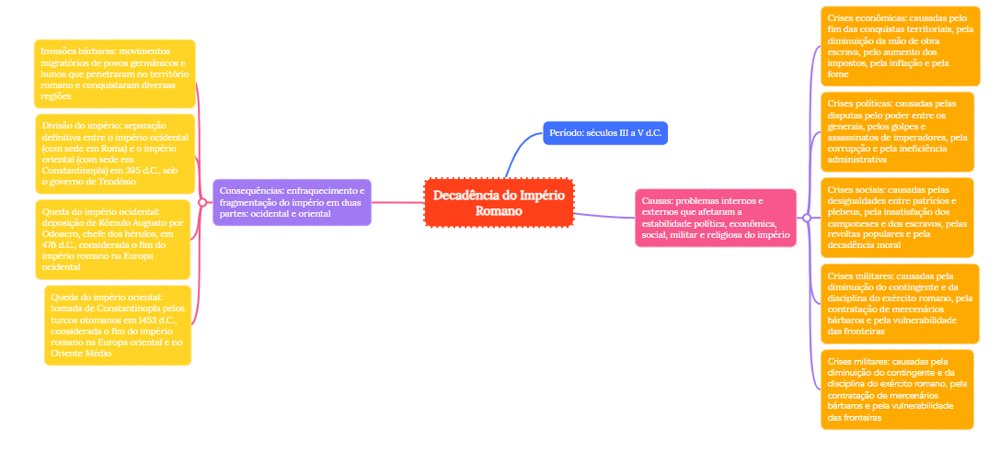

História
História geral e acontecimentos

Fundação de Roma
A fundação de Roma está envolta em lendas. Segundo a narrativa do poeta Virgílio, em sua obra Eneida, os romanos descendem de Enéias, herói troiano, que fugiu para a Itália após a destruição de Troia pelos gregos, por volta de 1400 a.C.
Segundo a lenda, os gêmeos Rômulo e Remo, descendentes de Enéias, foram jogados no rio Tibre, por ordem de Amúlio, usurpador do trono. Amamentados por uma loba e depois criados por um camponês, os irmãos voltam para destronar Amúlio.
Os irmãos receberam a missão de fundar Roma, em 753 a.C. Rômulo, após desentendimentos, assassinou Remo e se transformou no primeiro rei de Roma.
Na realidade, Roma formou-se da fusão de sete pequenas aldeias de pastores latinos e sabinos situadas às margens do rio Tibre. Depois de conquistada pelos etruscos chegou a ser uma verdadeira cidade-Estado.
Monarquia Romana (753 a.C. a 509 a.C.)
Na Roma monárquica, a sociedade era formada basicamente por três classes sociais:
- Os patrícios, a classe dominante, formada por nobres e proprietários de terra;
- Os plebeus, que eram constituídos por comerciantes, artesãos, camponeses e pequenos proprietários;
- Os clientes, que viviam da dependência dos patrícios e os plebeus, e eram prestadores de serviços.
Na monarquia romana, o rei exercia funções executiva, judicial e religiosa.
Era assistido pela Assembleia Curiata, que estava formada por trinta chefes de famílias do povo. Sua função mudou ao longo dos séculos, mas eram responsáveis por elaborar leis, recursos jurídicos e ratificar a eleição do rei. Em certos períodos a Assembleia Curiata deteve mais poder que o Senado. O Senado, composto pelos patrícios, assessorava o rei e tinha o poder de vetar as leis apresentadas pelo monarca.
As lendas narram os acontecimentos dos sete reinados da época. Durante o governo dos três últimos, que eram etruscos, o poder político dos patrícios declinou.
A aproximação dos reis com a plebe descontentavam os patrícios. Em 509 a.C., o último rei etrusco foi deposto e um golpe político marcou o fim da monarquia.
República Romana (509 a.C. a 27 a.C.)
A implantação da república significou a afirmação do Senado, o órgão de maior poder político entre os romanos. O poder executivo ficou a cargo das magistraturas, ocupadas pelos patrícios.
A república romana foi marcada pela luta de classes entre patrícios e plebeus. Os patrícios lutavam para preservar privilégios e defender seus interesses políticos e econômicos, mantendo os plebeus sob sua dominação.
Entre 449 e 287 a.C. os plebeus organizaram cinco revoltas que resultaram em várias conquistas: Tribunos da plebe, Leis das XII tábuas, Leis Licínias e Lei Canuleia. Com essas medidas, as duas classes praticamente se igualaram.
A Expansão Romana
A primeira etapa das conquistas romanas foi marcada pelo domínio de toda a Península Ibérica a partir do século IV a.C.
A segunda etapa foi o início das Guerras de Roma contra Cartago, chamadas Guerras Púnicas (264 a 146 a.C.). Em 146 a.C. Cartago foi totalmente destruída. Em pouco mais de cem anos, toda a bacia do Mediterrâneo já era de Roma.
Crise da República
Na República romana, a escravidão era a base de toda produção e o número de escravos ultrapassava os de homens livres. A violência contra os escravos causou dezenas de revoltas. Uma das principais revoltas escravos foi liderada por Espártaco entre 73 a 71 a.C. À frente das forças rebeldes, Espártaco ameaçou o poder de Roma.
Para equilibrar as forças políticas, em 60 a.C., o Senado indicou três líderes políticos ao consulado, Pompeu, Crasso e Júlio César, que formaram o primeiro Triunvirato.
Após a morte de Júlio César, foi instituído o segundo Triunvirato constituído por Marco Antônio, Otávio Augusto e Lépido.
As disputas de poder eram frequentes. Otávio recebeu do senado o título de Prínceps (primeiro cidadão) foi a primeira fase do império disfarçado de República.
Império Romano (27 a.C. a 476)
O imperador Otávio Augusto (27 a.C. a 14) reorganizou a sociedade romana. Ampliou a distribuição de pão e trigo e de divertimentos públicos - a política do pão e circo.
Depois de Augusto, várias dinastias se sucederam. Entre os principais imperadores estão:
- Tibério (14 a 37);
- Calígula (37 a 41);
- Nero (54 a 68);
- Tito (79 a 81);
- Trajano (98 a 117);
- Adriano (117-138);
- Marco Aurélio (161 a 180).
Decadência do Império Romano
A partir de 235, o Império começou a ser governado pelos imperadores-soldados, cujo principal objetivo era combater as invasões.
Do ponto de vista político, o século III caracterizou-se pela volta da anarquia militar. Num período de apenas meio século (235 a 284) Roma teve 26 imperadores, dos quais 24 foram assassinados.
Com a morte do imperador Teodósio, em 395, o Império Romano foi dividido entre seus filhos Honório e Arcádio.
Honório ficou com o Império Romano do Ocidente, capital Roma, e Arcádio ficou com o Império Romano do Oriente, capital Constantinopla.
476, o Império Romano do Ocidente desintegrou-se e o imperador Rômulo Augusto foi deposto. O ano de 476 é considerado pelos historiadores o marco divisório da Antiguidade para a Idade Média.
Da poderosa Roma, restou apenas o Império Romano do Oriente, que se manteria até 1453.
